Summarizing Data: Descriptive Statistics and Grouping
Opening scenario
An operations manager reviews a report that states a single figure: the average emergency department (ED) length of stay is 210 minutes. The manager sets a target of 200 minutes and asks the charge nurses to reach it.
The report leaves out two facts that change the picture:
- The typical stay is shorter than the average. Half of the patients with a recorded stay leave the ED within 190 minutes.
- A long tail of slower visits holds the average above that midpoint. The tail includes 264 stays of more than ten hours. All of them are admitted patients waiting in the ED for an inpatient bed (a situation known as boarding), a delay that ED staff do not control.
A target based on the average alone therefore treats a feature of the slowest visits as a problem of the typical visit. This chapter shows how to summarize a column so that one figure does not misrepresent the data behind it. The Real World box at the end of the chapter returns to the manager’s target.
By the end of this chapter, you will be able to:
- Build frequency tables and cross-tabulations of counts and percentages for categorical fields, and calculate a rate as the average of a 0/1 flag over a defined denominator.
- Calculate the mean, median, and mode, and select among them according to the type and shape of the data.
- Describe spread with the range, percentiles, the interquartile range, and the standard deviation.
- Interpret the shape of a distribution from a histogram and from the difference between the mean and the median.
- Summarize a measure by group with a PivotTable and with conditional formulas, including group medians.
- Report a summary in a single line that states the count, a center, a spread, the period, and any exclusions.
Key concepts
A complete summary of a column answers four questions, in this order:
- How many? The number of records the summary describes.
- Where is the center? A typical value, such as the mean or the median.
- How spread out are the values? A measure such as the interquartile range or the standard deviation.
- What is the shape? Whether the values are distributed evenly or extend in a long tail.
Most analyses add a fifth question: does the summary differ between groups?
Chapter 6 introduced the functions that compute these statistics, and Chapter 8 applied them to profile a file for data-quality problems. This chapter treats the same statistics as findings to be reported.
Most examples use datasets/DS3_ed_throughput_clean.csv,
which records 18,000 ED visits from January 2024 through December 2025.
The principal measure is length_of_stay_minutes, the number
of minutes from a patient’s arrival to departure.
The DS prefix numbers the book’s operational teaching
datasets, and the PH prefix numbers its public health
datasets. This chapter uses DS2 (appointments),
DS3 (ED visits), DS5 (claims),
DS6 (patient survey responses), and PH1
(county public health measures).
About the teaching data. Every dataset in this book is synthetic, as Chapter 5 explained, so none contains protected health information. The files are also simplified:
DS3is tidier than real ED data. No visit discharged home lasts longer than 315 minutes, and every stay longer than 600 minutes belongs to an admitted patient who is boarding.PH1is not a CDC release. It pairs real county names and Federal Information Processing Standards (FIPS) codes with synthetic estimates modeled on the Population Level Analysis and Community Estimates (PLACES) program of the Centers for Disease Control and Prevention (CDC, 2024). Its values describe no actual county and cannot estimate national prevalence.
Start with the count
Descriptive statistics are numbers that summarize the count, center, spread, and shape of a column. The sample size, written n, is the number of records from which a statistic is computed.
The count often differs from the number of rows. The ED file contains
18,000 rows, but only 17,416 record a length of stay. Recall from
Chapter 8 that the other 584 visits ended with the patient leaving
without being seen (LWBS in the disposition
column); these blanks are structural, so every statistic for
length_of_stay_minutes uses 17,416 visits. Figure 1 traces
how the 18,000 rows divide.
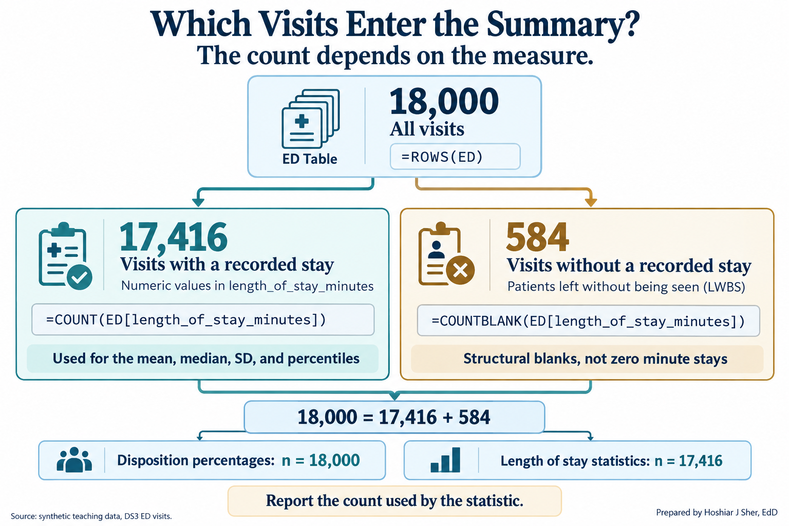
Excel provides a separate function for each definition of a count (Table 1). Using the incorrect one is a common reason that two reports of the same file disagree.
| Function | Counts | ED example | Result |
|---|---|---|---|
ROWS |
Rows in a Table or range | =ROWS(ED) |
18,000 |
COUNT |
Cells containing a number | =COUNT(ED[length_of_stay_minutes]) |
17,416 |
COUNTA |
Cells that are not empty | =COUNTA(ED[disposition]) |
18,000 |
COUNTBLANK |
Empty cells | =COUNTBLANK(ED[length_of_stay_minutes]) |
584 |
COUNTIFS |
Rows meeting one or more conditions | =COUNTIFS(ED[disposition], "Admit") |
1,127 |
The status bar at the bottom of the Excel window offers a check without formulas: it displays the Average, Count, and Sum of any selected range, and right-clicking it adds Minimum and Maximum.
Report n with every statistic. A median of 190 minutes computed from 17,416 visits is far more stable than the same median computed from 12 visits.
Summarizing a category: frequency tables and rates
A frequency table lists each category of a field with the number of records in that category. The relative frequency is a category’s count divided by the total, usually expressed as a percentage. The mode is the most frequent category.
A categorical field such as disposition has no
arithmetic mean. Its standard summary is a frequency table, shown in
Table 2. The mode is Home, which accounts for 76.5 percent
of visits.
| Disposition | Visits | Percent of all visits |
|---|---|---|
| Home | 13,769 | 76.5% |
| Observe | 1,946 | 10.8% |
| Admit | 1,127 | 6.3% |
| LWBS (left without being seen) | 584 | 3.2% |
| Eloped | 388 | 2.2% |
| Transfer | 186 | 1.0% |
| Total | 18,000 | 100.0% |
The table can be built with COUNTIFS and
ROWS(ED) or with a PivotTable (described later). Two
conventions keep it accurate:
- State the denominator. “6.3 percent of visits ended in admission” uses all 18,000 visits; excluding the 584 LWBS visits would change every percentage.
- Preserve the order of ordinal categories. Sort a nominal field such as disposition by frequency, but keep triage levels and rating scales in their natural order.
A rate is a relative frequency with a complete definition. Recall from Chapter 4 that a rate requires four parts: a numerator, a denominator, a statement of what it includes and excludes, and a time window.
Many healthcare files record events as a flag, a
column coded 1 when the event occurred and 0
when it did not. The average of a flag equals the proportion of 1s, so
AVERAGE returns a rate over whichever rows it is given.
Strictly, a share of records is a proportion; healthcare quality
reporting conventionally calls it a rate, and this book follows that
usage.
In datasets/DS2_appointments_clean.csv,
no_show_flag is 0 for every appointment that
is not a no-show, including cancellations and reschedules.
=AVERAGE(Appointments[no_show_flag]) therefore divides the
4,913 no-shows by all 36,000 appointments and returns 13.6
percent. The Chapter 1 rate uses the 30,571 completed or
no-show appointments as its denominator and is 16.1
percent. Restrict the rows before averaging a flag.
Figure 2 sets the two calculations side by side.
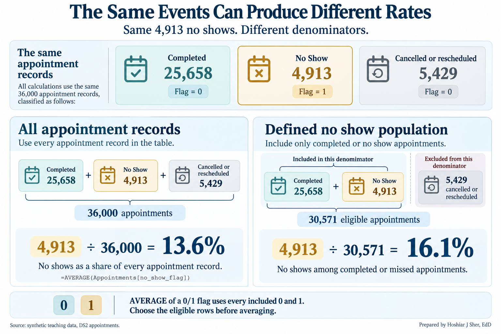
The defined no-show rate, numerator over denominator:
=COUNTIFS(Appointments[attendance_outcome], "No Show") /
(COUNTIFS(Appointments[attendance_outcome], "Completed")
+ COUNTIFS(Appointments[attendance_outcome], "No Show"))
returns 0.1607, formatted as 16.1%. Chapter 3
(Exercise 7) computed the same rate for every clinic with a
PivotTable.
The center: mean, median, and mode
The mean is the sum of the values divided by their count. The median is the middle value of the sorted data, so half the records fall at or below it and half at or above it. For numeric data, the mode is the value that occurs most often.
The mean and the median measure a typical value in different ways:
- The mean uses every value, so each extreme value shifts it.
- The median depends only on the middle of the sorted values, so extreme values have little effect on it.
Figure 3 illustrates the difference. When the longest of five stays becomes 600 minutes, the median remains 190 and the mean rises to 264, a value greater than four of the five observations.
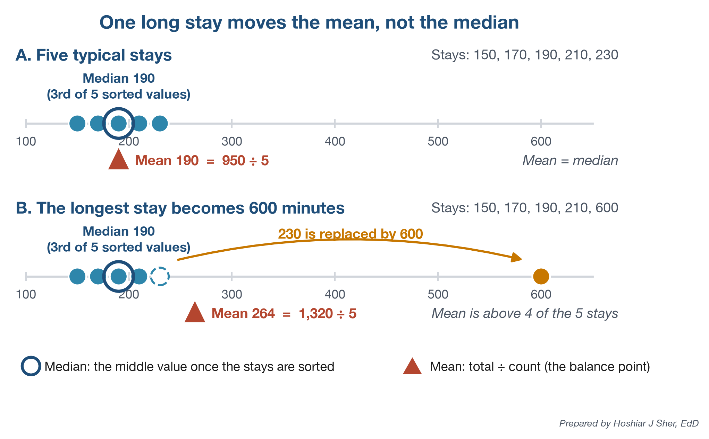
The ED file shows the same pattern: a long right tail raises the mean (210) 20 minutes above the median (190). The tail is broad rather than a few extreme values:
- Removing the 16 stays longer than 1,000 minutes lowers the mean by less than one minute.
- Removing all 264 stays longer than 600 minutes still leaves the mean 11 minutes above the median.
Neither statistic is incorrect; each answers a different question (Freedman et al., 2007), and Table 3 matches the measure to the data.
| Type of data | Example field | Preferred center | Reason |
|---|---|---|---|
| Nominal category | disposition |
Mode, with percentages | Categories have no order or average |
| Ordinal scale | staff_courtesy_score_1_4 |
Median, or top-box percentage | Intervals between ratings are not equal |
| Numeric, approximately symmetric | door_to_provider_minutes |
Mean | Mean (43.4) and median (43) agree |
| Numeric, skewed | length_of_stay_minutes |
Median; add the mean when totals matter | The tail draws the mean away from typical values |
Rating scales and the numeric mode require particular care:
- Rating scales. On
staff_courtesy_score_1_4, the median is 4 and the mean is 3.47. A mean assumes equal intervals between ratings, which a rating scale does not guarantee.- Public reports of the Hospital Consumer Assessment of Healthcare Providers and Systems (HCAHPS) survey therefore use a top-box score, the percentage of responses in the most favorable category (Centers for Medicare & Medicaid Services [CMS], n.d.).
- Here the top-box score is 55.2 percent of 5,500 responses.
- The numeric mode. For ED length of stay,
MODE.SNGLreturns 173 minutes, shared by only 209 visits (1.2 percent), while 174 minutes occurs 207 times. Exact-value modes are generally uninformative for continuous measurements, although the mode remains useful for categorical and genuinely discrete variables.
In Excel, AVERAGE and MEDIAN (Chapter 6)
return the mean and median, and MODE.SNGL returns a numeric
mode; the mode of a text field is the top row of its frequency
table.
The mean describes the average per record, which determines totals. The median describes the typical record. When the two differ substantially, the distribution is asymmetric, and the median is usually the better description of a typical case.
Spread: how far the values scatter
- The range is the largest value minus the smallest.
- A percentile is the value at or below which a given percentage of the data falls.
- The quartiles and the interquartile range (IQR) from Chapter 8 are the 25th and 75th percentiles and the distance between them.
- The standard deviation (SD) measures the typical distance of values from the mean.
A center without a spread is incomplete: two EDs can share a median of 190 minutes while one discharges nearly every patient within 170 to 210 minutes and the other within one to ten hours. Figure 4 compares four measures of spread.
![Figure 4: Four measures of spread, each shaded on the same histogram of the 17,416 ED visits with a recorded stay. The range covers every visit but depends on the two most extreme stays; the 10th to 90th percentile covers about 81 percent of visits and the interquartile range about 51 percent, centered on the median; the mean plus or minus one SD is lopsided on these skewed data, with 1.2 percent of visits below it and 6.5 percent above. Percentiles use PERCENTILE.INC, and the 148 stays above 700 minutes are not drawn. Source: datasets/DS3_ed_throughput_clean.csv, January 2024 to December 2025.](figures/generated/ch_09_spread_measures.png)
Each measure answers a different question:
- Range (74 to 1,225 minutes) depends entirely on the two most extreme visits.
- 10th to 90th percentile (146 to 280 minutes) excludes the extreme tenth at each end; the 90th percentile can serve as a service standard (“90 percent of patients leave within 280 minutes”).
- IQR (165 to 227 minutes; 62) covers the middle half. Chapter 8 used it as an outlier fence; as a summary, it pairs with the median.
- SD (about 90 minutes) uses every value and pairs with the mean.
Table 4 calculates the least intuitive of the four, the SD, for five illustrative door-to-provider times.
| Wait (minutes) | Distance from the mean of 45 | Distance squared |
|---|---|---|
| 30 | -15 | 225 |
| 40 | -5 | 25 |
| 45 | 0 | 0 |
| 50 | 5 | 25 |
| 60 | 15 | 225 |
| Total | 0 | 500 |
The calculation has five steps:
- Compute the mean: 225 divided by 5 is 45 minutes.
- Subtract the mean from each value to obtain its distance from the center.
- Square each distance so that values above and below the mean both contribute positively.
- Sum the squares (500) and divide by one less than the count (4). The result, 125, is the variance.
- Take the square root of the variance: the square root of 125 is approximately 11.2 minutes.
Figure 5 summarizes the calculation: squaring prevents the distances from cancelling, and the square root returns the result to minutes.
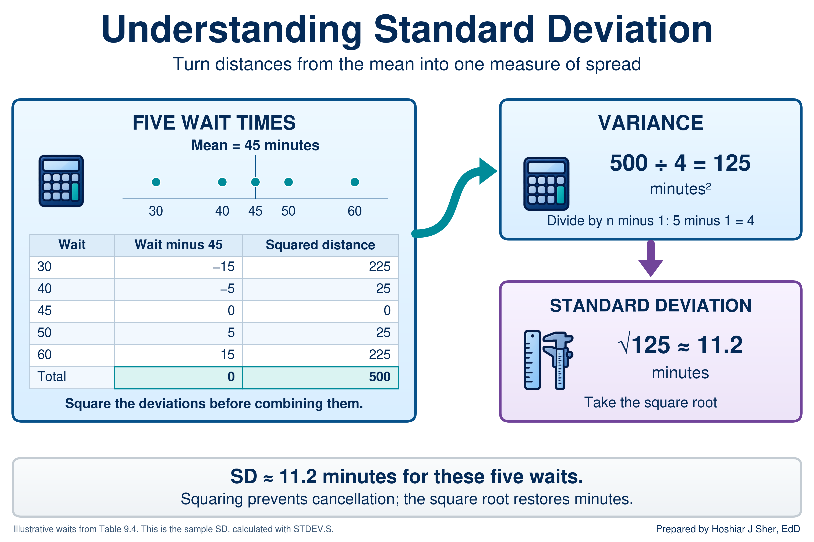
Excel offers two versions of the calculation, and the choice depends on how the analysis defines its population:
STDEV.Pdivides by n. It applies when the records are the complete population of interest and no wider process is being described. It returns 10.0 for the five waits.STDEV.Sdivides by n minus 1. It applies when the records are a sample from an ongoing process. It returns 11.2.
This book follows Chapter 6 and uses STDEV.S throughout,
treating each file as a sample of ongoing activity. For the 17,416 ED
visits the two functions differ by less than 0.01 minute, but the
distinction matters for small groups (Freedman et al., 2007). Chapter 10
interprets the SD in relation to the normal distribution.
The walkthrough completes the spread measures with three more calculations:
- the range,
MAXminusMIN; - percentiles, such as
PERCENTILE.INC(values, 0.9)for the 90th percentile; - quartiles, with
QUARTILE.INC(Chapter 8).
The SD is influenced by the tail in the same way as the mean. For ED length of stay, the mean plus or minus one SD spans about 120 to 300 minutes, yet only 1.2 percent of visits are shorter than 120 minutes. On skewed data, describe spread with percentiles or the IQR.
The minimum, Q1, median, Q3, and maximum form the five-number summary (Tukey, 1977). For ED length of stay they are 74, 165, 190, 227, and 1,225 minutes.
A box plot draws a closely related picture:
- the box spans Q1 to Q3, with a line at the median;
- the whiskers extend to the most extreme values that are not outliers under the 1.5 times IQR rule from Chapter 8;
- values beyond the whiskers are plotted as separate points.
Chapter 8 used a box plot to locate the outlier fences. Figure 6 reads the same parts on nine illustrative stays and adds two features of Excel’s chart: an x for the mean and a point for each value beyond a whisker.
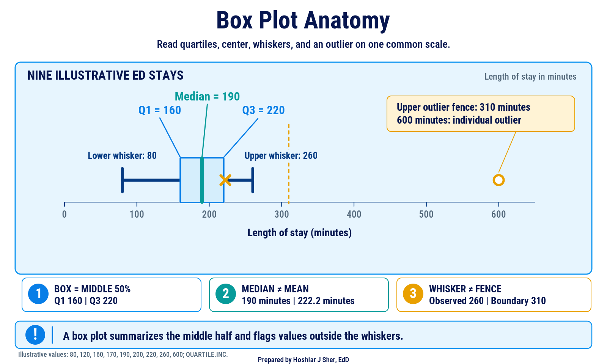
Figure 7 turns the same nine stays into a reading guide: what each part means and how the fences decide where the whiskers stop.
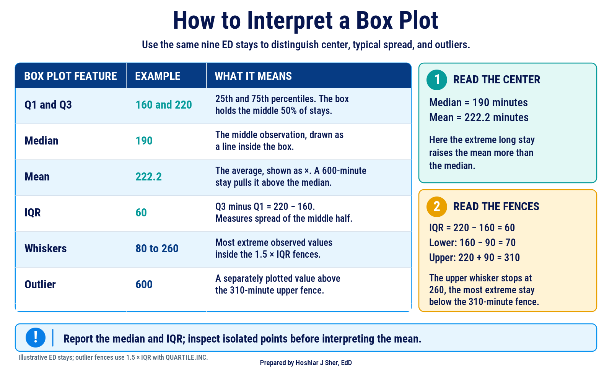
Pair a center with a measure of spread that behaves the same way: the median with the IQR or percentiles, both resistant to extreme values, and the mean with the SD (Diez et al., 2019).
Shape: histograms and skew
- The distribution of a column is the pattern of how often each value occurs.
- A histogram displays a distribution as bars, each counting the values that fall in one bin, a range of equal width.
- A distribution is symmetric when its two sides approximately mirror each other and skewed when one tail extends farther than the other. A right-skewed distribution has a long tail toward high values.
Summary statistics compress the shape of a distribution; a histogram displays it (Çetinkaya-Rundel & Hardin, 2021). Figure 8 presents three shapes from the teaching data.
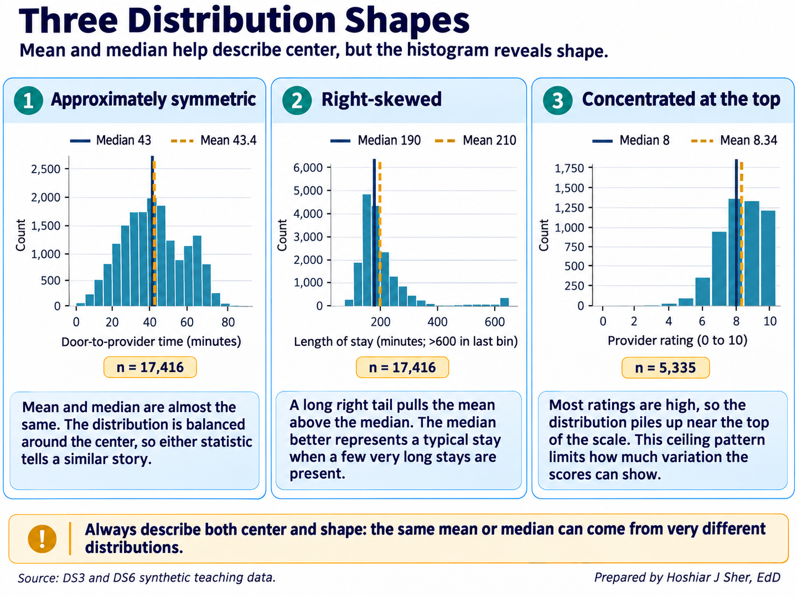
The panels illustrate three shapes:
- Approximately symmetric: door-to-provider time. The mean (43.4 minutes) and median (43) agree. A smaller second peak near 65 to 70 minutes comes from triage level 5, whose mean wait is 66 minutes against 13 at level 1, so the shape is a blend of groups.
- Right-skewed: length of stay. A long right tail, thin beyond 600 minutes, raises the mean (210) above the median (190). As the discussion of the center showed, the stays beyond 600 minutes explain only part of the gap.
- Concentrated at the top of the scale: provider rating. On a short, bounded scale the mean (8.34) can exceed the median (8) despite a longer lower tail, so the top-box percentage is more informative than the gap.
Durations and costs are often right-skewed because they have a floor
of zero but no fixed ceiling. Door-to-provider time in this file is not,
so examine the shape each time. For durations and costs, a mean well
above the median indicates a right tail, and the SKEW
function quantifies this, returning about 4.5 for length of stay and
0.08 for door-to-provider time.
A histogram’s appearance depends on its bin width (Figure 9): five-minute bins show random variation and 150-minute bins conceal the skew. Choose a width that is meaningful in the data’s units, such as 30 minutes or $500.
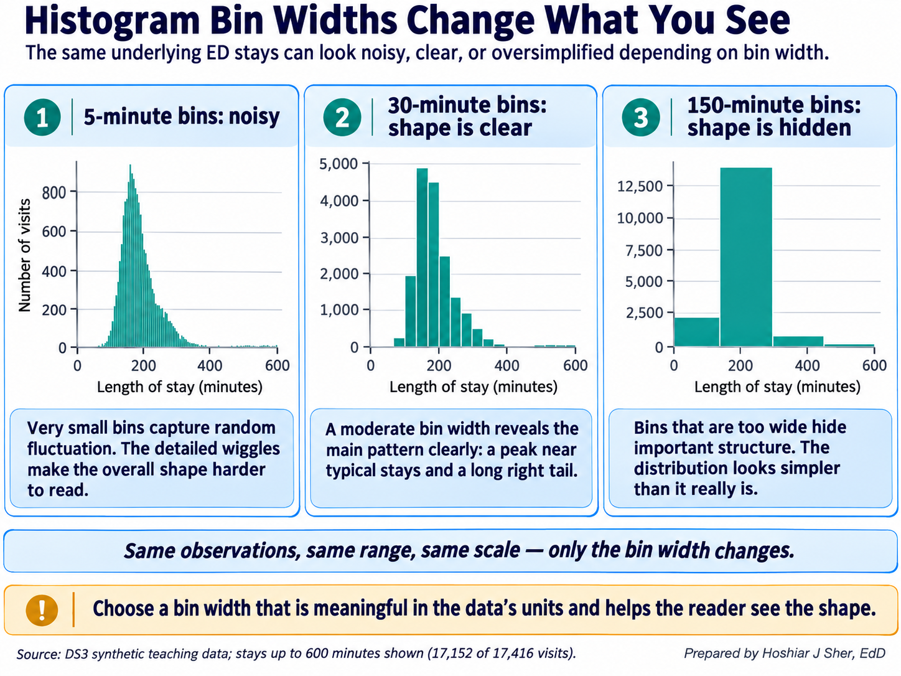
Excel offers three tools for examining shape:
- Histogram chart. Select the numeric cells and choose Insert > Insert Statistic Chart > Histogram. Right-click the horizontal axis and choose Format Axis to set the Bin width, an Overflow bin for all values above a cutoff, and an Underflow bin for all values at or below a cutoff.
- Numeric frequency table.
COUNTIFSwith a lower and an upper condition counts one bin:=COUNTIFS(ED[length_of_stay_minutes], ">150", ED[length_of_stay_minutes], "<=180")returns4866. - Analysis ToolPak. Data > Data Analysis > Descriptive Statistics writes a static table of the mean, median, mode, SD, range, count, and skewness (Chapter 3 explains how to enable the add-in); it does not recalculate when the data change.
Examine the shape before selecting a summary. A histogram, or the mean and median side by side, indicates whether the mean will describe a typical case or overstate it.
Comparing groups
Most operational questions concern groups, such as length of stay by
triage level or charges by service line. Chapter 6 calculated the mean
length of stay by triage level with AVERAGEIFS; Figure 10
adds the median.
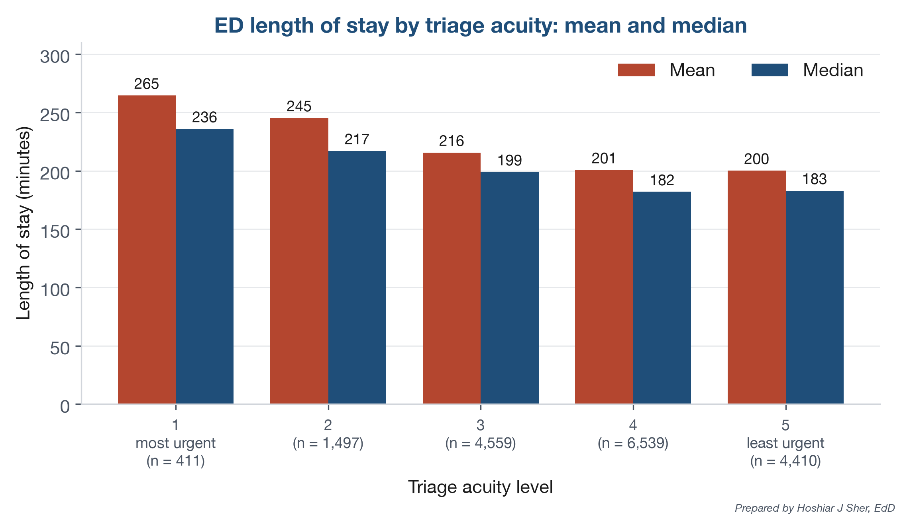
The median stay falls from 236 minutes at triage level 1 to about 182 at levels 4 and 5, a gradient that the overall median of 190 conceals. The mean exceeds the median at every level because each group has its own right tail.
These differences are associations; the comparison alone does not establish why higher-acuity visits are longer.
Excel provides AVERAGEIFS but no MEDIANIFS,
so a group median requires MEDIAN wrapped around two
IF tests:
- the first
IFretains a stay only when its row belongs to the group; - the second
IFexcludes blank stays, which Excel would otherwise evaluate as zeros.
Median length of stay for the triage level in cell
A18:
=MEDIAN(IF(ED[triage_acuity]=A18,
IF(ED[length_of_stay_minutes]<>"", ED[length_of_stay_minutes])))
For level 1, the formula returns 236.
In Microsoft 365 and Excel 2021, press Enter. In Excel 2019 and earlier,
confirm it as a legacy array formula with Ctrl+Shift+Enter (the same
keys on macOS).
In current Microsoft 365 versions, GROUPBY returns
all group medians from one formula:
=GROUPBY(ED[triage_acuity], ED[length_of_stay_minutes], MEDIAN,
, , , ED[length_of_stay_minutes]<>"")
Three empty arguments retain the defaults, and the last excludes blank
stays. The result lists each triage level’s median and a total row of
190.
Groups can also differ in spread. Figure 11 compares the stays for each disposition:
- Discharged home: a median of 181 minutes, with a middle half from 161 to 204.
- Admitted: a median of 327 minutes, with a middle half from 285 to 584, a box nearly seven times as wide.
A median alone would conceal that admitted stays are far less predictable. Points beyond the whiskers appear in every group (196 in total, 152 of them among discharges home).
![Figure 11: ED length of stay by disposition, in the style of an Excel box-and-whisker chart. Admitted visits have both a longer typical stay (median 327 against 181 minutes for discharges home) and a middle half about seven times as wide (IQR about 299 against 43 minutes). Each box spans Q1 to Q3, the line marks the median, the x marks the mean, whiskers extend to the most extreme values within 1.5 times the IQR, and values beyond the whiskers are plotted as points. Groups are ordered by median; Excel orders them by first appearance in the data. LWBS visits have no length of stay and are not shown. Source: datasets/DS3_ed_throughput_clean.csv, January 2024 to December 2025.](figures/generated/ch_09_los_by_disposition.png)
To draw the chart in Excel:
- Filter the
dispositioncolumn to excludeLWBS, whose stays are blank. - Copy the visible
dispositionvalues to columnAof a new sheet, and the visiblelength_of_stay_minutesvalues to columnB. - Return to the data sheet and choose Data > Clear to remove the filter, so that later steps use all 18,000 visits.
- On the new sheet, select both columns and choose Insert > Insert Statistic Chart > Box and Whisker. Excel draws vertical boxes and plots points beyond the whiskers, as in the figure.
- Right-click a box, choose Format Data Series, and
set Quartile Calculation to Inclusive
median, the option closest to
QUARTILE.INC.
Report the count beside every group statistic. A median based on 186 transfers is less stable than one based on 13,769 discharges home; Chapter 10 quantifies this uncertainty.
PivotTables for group summaries
Chapters 3 and 4 used a PivotTable to count records by group. It produces many of this chapter’s summaries without a formula for each group; Figure 12 shows the layout behind the disposition frequency table.
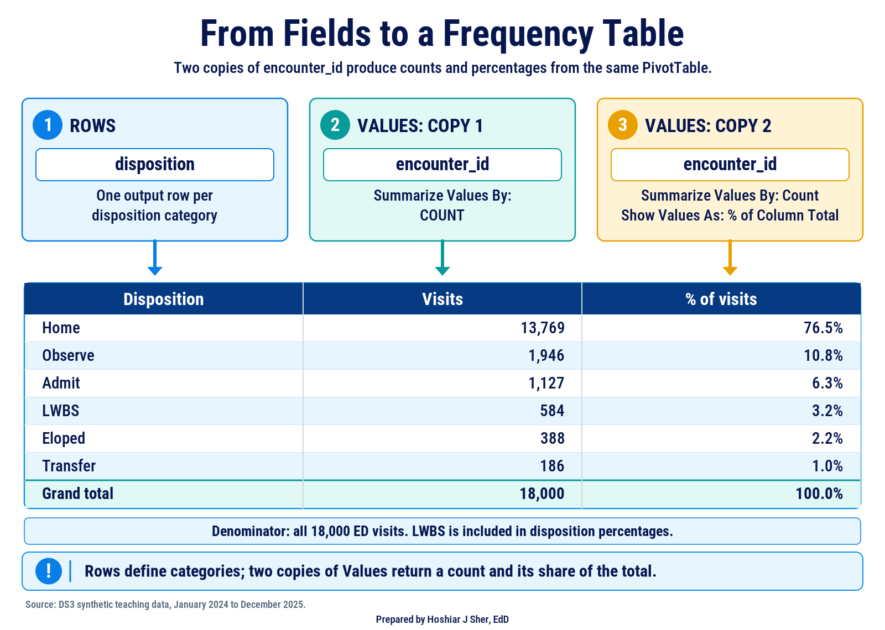
A field in Rows produces one row per category, and a field in Values is summarized for each row. Two settings, reached by right-clicking a value, control the summary:
- Value Field Settings > Summarize Values By
selects the calculation: Count (the default for text),
Sum (the default for numbers),
Average, Max, Min, or
StdDev (equivalent to
STDEV.S). - Show Values As converts values to percentages; % of Column Total turns a count into a relative frequency.
Further features support descriptive work:
- Average of a flag returns a rate for each group; a field in Filters restricts the denominator first.
- Count includes only non-empty cells, so Count of length_of_stay_minutes returns 17,416 and Count of encounter_id 18,000.
- Group (right-click a numeric row value) creates bins; fields containing blanks or text cannot be grouped.
- Slicers (PivotTable Analyze > Insert Slicer) filter by category with buttons.
- Refresh (PivotTable Analyze > Refresh) is required after the source data change.
A standard PivotTable cannot compute a median or a percentile;
Summarize Values By offers Sum, Count, Average, Max,
Min, Product, the standard deviation, and the variance. For skewed data,
compute group medians with MEDIAN(IF(...)) or
GROUPBY rather than presenting averages as typical
values.
In summary, conditional formulas compute any statistic and
recalculate automatically, PivotTables are faster to build but lack
medians, and GROUPBY combines both strengths in Microsoft
365.
Cross-tabulating two categorical fields
A cross-tabulation, also called a contingency table, counts records by two categorical fields at once, with one field in the rows and the other in the columns. Each cell counts the records that share both categories.
A frequency table describes one field; a cross-tabulation describes
how two fields occur together. In a PivotTable, place
triage_acuity in Rows,
disposition in Columns, and a count of
encounter_id in Values. Table 5 shows the
result as row percentages, with the three smallest dispositions grouped
as “Other” to keep the table compact; Practice A shows how to create the
group.
| Triage level | Visits | Home | Observe | Admit | Other |
|---|---|---|---|---|---|
| 1 | 429 | 67.4% | 9.6% | 12.6% | 10.5% |
| 2 | 1,542 | 72.0% | 10.1% | 11.1% | 6.8% |
| 3 | 4,734 | 76.4% | 11.0% | 6.0% | 6.6% |
| 4 | 6,751 | 76.8% | 11.2% | 5.4% | 6.6% |
| 5 | 4,544 | 78.4% | 10.3% | 5.7% | 5.6% |
| All | 18,000 | 76.5% | 10.8% | 6.3% | 6.4% |
The choice of percentage determines the question a cross-tabulation answers:
- % of Row Total answers “of the visits at each triage level, what share ended in each disposition?” About 12 percent of visits at levels 1 and 2 ended in admission, against 5 to 6 percent at levels 3 to 5.
- % of Column Total answers “of the visits with each disposition, what share came from each triage level?” It describes the composition of a group, such as admitted patients.
Figure 13 applies both readings to the same cell, the 54 level 1 visits that ended in admission.
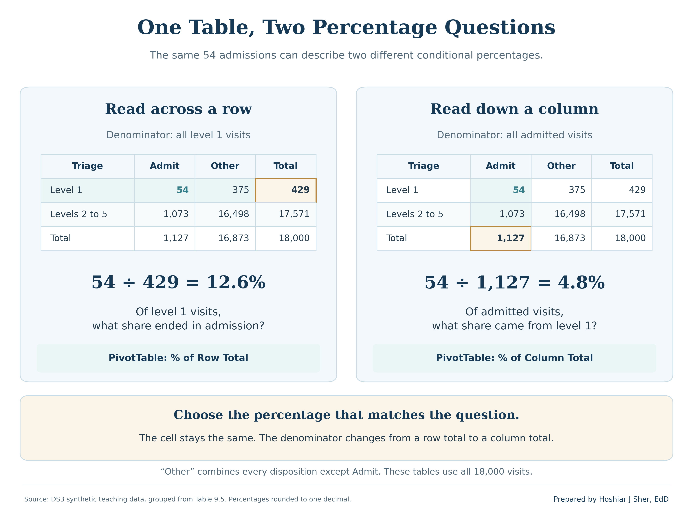
Report the row counts with row percentages: level 1 has only 429 visits, so each admission moves its percentage by about a quarter of a point.
Writing the summary line
A summary line reports a measure in one sentence that a reader can quote without being misled. It states five elements: the measure, a center, a spread, the count, and the period, together with any exclusions. Compare two versions:
- Incomplete: “Average ED length of stay is 210 minutes.”
- Complete: “Median ED length of stay was 190 minutes (IQR 165 to 227) across 17,416 visits with a recorded stay, January 2024 to December 2025; the 584 visits that left without being seen are excluded.”
Figure 14 labels the elements of the complete version.
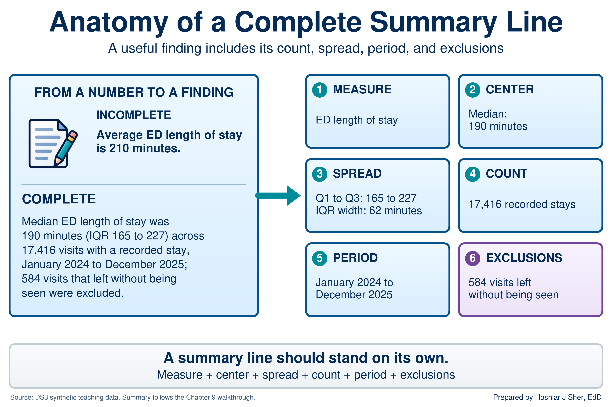
A summary line places a number in the context a reader needs to interpret it (Spiegelhalter, 2019). For approximately symmetric data, report the mean with its SD: “mean door-to-provider time was 43.4 minutes (SD 17.2) across 17,416 visits.” Round consistently, for example to whole minutes and to one decimal place for percentages.
In Excel, the ampersand (&) joins text and the
TEXT function formats a number within a sentence;
TEXT(B4, "#,##0") displays 17,416 with a thousands
separator. The walkthrough uses both, together with MIN and
MAX of the arrival dates, to build a summary line that
updates with the data.
Walkthrough: build an ED length-of-stay profile
This build produces the one-page profile in Figure 16: an overall
summary of length of stay, a histogram, a summary by triage level with
group medians, a frequency table of dispositions, and a summary line.
Every component is linked to the ED Table by formulas, so
the profile recalculates when the data change.
Before you start:
- Open
datasets/DS3_ed_throughput_clean.csvand save a working copy as an Excel workbook so the original file remains unchanged. - In the CSV as opened in Excel,
triage_acuityis columnJ,dispositionis columnY,door_to_provider_minutesis columnAI, andlength_of_stay_minutesis columnAK. - If you built the Power Query import in Chapter 7, you can load the file through it instead. The profile then updates with Data > Refresh All when a new extract arrives.
Part A. Set up the workbook.
- Open
datasets/DS3_ed_throughput_clean.csvin Excel. - Choose File > Save As, select Excel
Workbook (.xlsx), and name the file
ch09_ed_profile.xlsx. - Click any cell in the data and press Ctrl+T (Cmd+T on macOS). Confirm that My table has headers is checked, and click OK.
- On the Table Design tab (Table on
macOS), set the Table Name to
ED. - Add a worksheet with the + beside the sheet tabs
and rename it
Profile. - In
A1, typeED Length of Stay Profile. SelectA1:D1, choose Home > Merge & Center, and format the cell as Bold, size 14, with a dark blue fill and white font.- Merging is acceptable on a report sheet such as this one (Chapter 6), but not in a data table, where it breaks sorting and filtering (Chapter 3).
Part B. Inspect the column with the status bar.
- Return to the data sheet. Point to the top edge of the
length_of_stay_minutesheader in columnAKuntil the pointer becomes a down arrow, then click once. Excel selects the column’s values without the header. - Read the status bar. Average shows about
209.85, Count shows17,416, and Sum shows3,654,737. Right-click the status bar and tick Minimum and Maximum, which show74and1,225.
Part C. Build the overall summary.
- On the
Profilesheet, typeMeasureinA3andValueinB3, then makeA3:B3Bold. - Enter each label and formula in Table 6, one row at a time, with the
label in column
Aand the formula in columnB. Confirm each result against the final column before continuing.
| Row | Label (column A) | Formula (column B) | Shows (rounded) |
|---|---|---|---|
| 4 | Visits with a recorded stay | =COUNT(ED[length_of_stay_minutes]) |
17416 |
| 5 | Visits with no stay recorded | =COUNTBLANK(ED[length_of_stay_minutes]) |
584 |
| 6 | Mean (minutes) | =AVERAGE(ED[length_of_stay_minutes]) |
209.85 |
| 7 | Median (minutes) | =MEDIAN(ED[length_of_stay_minutes]) |
190 |
| 8 | Standard deviation | =STDEV.S(ED[length_of_stay_minutes]) |
90.33 |
| 9 | Shortest stay | =MIN(ED[length_of_stay_minutes]) |
74 |
| 10 | Q1 (25th percentile) | =QUARTILE.INC(ED[length_of_stay_minutes], 1) |
165 |
| 11 | Q3 (75th percentile) | =QUARTILE.INC(ED[length_of_stay_minutes], 3) |
227 |
| 12 | IQR (Q3 minus Q1) | =B11-B10 |
62 |
| 13 | 90th percentile | =PERCENTILE.INC(ED[length_of_stay_minutes], 0.9) |
280 |
| 14 | Longest stay | =MAX(ED[length_of_stay_minutes]) |
1225 |
| 15 | Mean minus median | =B6-B7 |
19.85 |
- Select
B6:B15and click Home > Decrease Decimal until no decimals remain; the mean reads210, the standard deviation90, and the difference20. Then selectB4:B5, hold Ctrl (Cmd on macOS), addB14, apply Comma Style, and click Decrease Decimal twice so that the counts read17,416and584.
The completed block reports a count of 17,416 visits, a median of 190 minutes, a middle half from 165 to 227 minutes, and a mean 20 minutes above the median, which indicates a right tail.
Part D. Draw the histogram.
- On the data sheet, select the values of
length_of_stay_minutesas in step 7. - Choose Insert > Insert Statistic Chart > Histogram (on macOS, Insert, then the Statistical chart icon, then Histogram).
- Right-click the horizontal axis and choose Format
Axis. Under Axis Options, set Bin
width to
30, tick Overflow bin and enter600, and tick Underflow bin and enter90. - Change the chart title to
ED length of stay (minutes). Choose Chart Design > Move Chart, select Object in, chooseProfile, and click OK. Position the chart beside the summary, near cellF3.- Check your work: the tallest bar is the bin labeled
(150, 180], with 4,866 visits (point to a bar to display its count). The underflow bar, for stays of 90 minutes or less, holds 10 visits, and the overflow bar labeled>600holds 264. The chart should match the shape of Figure 15.
- Check your work: the tallest bar is the bin labeled
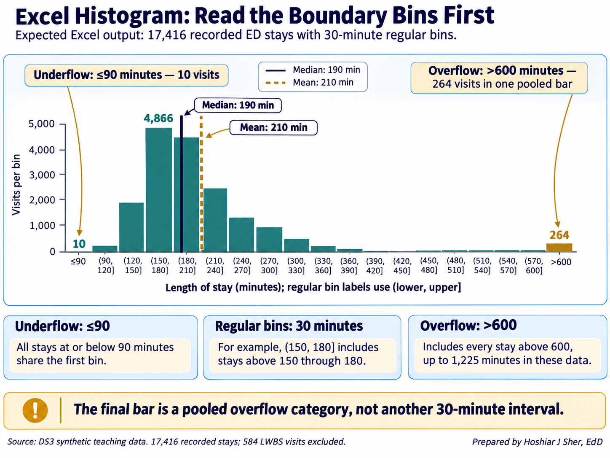
Part E. Summarize by triage level.
- In
A17:D17, typeTriage,Visits,Mean, andMedian, and make the row Bold. InA18:A22, type1through5. - In
B18, enter=COUNTIFS(ED[triage_acuity], A18, ED[length_of_stay_minutes], "<>"). It shows411. The"<>"condition counts only non-blank stays, so the count matches the visits used by the mean and the median. - In
C18, enter=AVERAGEIFS(ED[length_of_stay_minutes], ED[triage_acuity], A18). It shows about264.7. - In
D18, enter the following formula as a single line (it is divided here to fit the page):
=MEDIAN(IF(ED[triage_acuity]=A18,
IF(ED[length_of_stay_minutes]<>"", ED[length_of_stay_minutes])))
It shows236. A result of233indicates that the innerIFis missing and blank stays are being counted as zeros. - Select
B18:D18and drag the fill handle to row 22. Remove the decimals fromC18:D22with Decrease Decimal.- Check your work: the visit counts are
411,1,497,4,559,6,539, and4,410; the means are265,245,216,201, and200; and the medians are236,217,199,182, and183, as in Figure 10.
- Check your work: the visit counts are
Part F. Build a frequency table with a PivotTable.
- Click any cell in the
EDTable, choose Insert > PivotTable, accept New Worksheet, and click OK. Rename the new sheetDisposition. - In the PivotTable Fields pane, drag
dispositionto Rows, then dragencounter_idto Values twice. The columns read Count of encounter_id and Count of encounter_id2, each with a grand total of18,000. - Right-click a value in the second column and choose Show
Values As > % of Column Total. Right-click a value in the
first column and choose Sort > Sort Largest to
Smallest. Then click the header cell Count of
encounter_id, type
Visits, and press Enter; rename the second header% of visitsin the same way.- Check your work:
Homeappears first with13,769visits and76.5%, andTransferappears last with186and1.0%, as in Figure 12.
- Check your work:
Part G. Format the sheet and write the summary line.
- Select
A3:D22and apply Home > Borders > All Borders. With the range still selected, choose Home > Format > AutoFit Column Width, which fits columnsAtoDto the summary blocks. Format the columns before step 25 so that the long sentence does not widen columnA. - In
A24, enter the following formula as a single line (it is divided here to fit the page):
="Median ED length of stay was "&TEXT(B7, "0")&" minutes (IQR "
&TEXT(B10, "0")&" to "&TEXT(B11, "0")&") across "&TEXT(B4, "#,##0")
&" visits with a recorded stay, "&TEXT(MIN(ED[arrival_date]), "mmmm yyyy")
&" to "&TEXT(MAX(ED[arrival_date]), "mmmm yyyy")&"; "&TEXT(B5, "#,##0")
&" visits that left without being seen were excluded."
The cell shows: “Median ED length of stay was 190 minutes (IQR 165 to 227) across 17,416 visits with a recorded stay, January 2024 to December 2025; 584 visits that left without being seen were excluded.”MINandMAXread the arrival dates, so the period also updates with the data.- The format codes
"mmmm yyyy"and"#,##0"assume an English-language version of Excel; other language versions use local codes, such asJJJJfor the year in German.
- Select
A24:D27, choose Home > Merge & Center > Merge Cells, and click Wrap Text and Top Align so that the sentence wraps within the block. Save with Ctrl+S (Cmd+S on macOS). The sheet should match Figure 16.
![Figure 16: Checkpoint for the completed Profile worksheet, reconstructed from the chapter’s values: (1) the overall summary in A3:B15, (2) the histogram placed near F3 in step 15, (3) the summary by triage level with group medians in A17:D22, and (4) the summary line in the merged block A24:D27. Every value is linked to the ED Table by a formula, and the disposition frequency table is on the separate Disposition sheet. Source: datasets/DS3_ed_throughput_clean.csv, 18,000 visits (17,416 with a recorded stay).](figures/generated/ch_09_profile_sheet.png)
The completed profile answers the chapter’s five questions: how many
(row 4), center (rows 6 and 7), spread (rows 8 to 13), shape (the
histogram and row 15), and groups (rows 17 to 22 and the
Disposition sheet).
Practice on your own
These exercises apply the walkthrough’s methods to new questions. Practice A is fully guided and extends the PivotTable from one categorical field to two. Practice B names the functions and provides values for checking, but leaves the formulas to you.
Practice A: cross-tabulate triage level and disposition
Chapter 3 built a PivotTable of the no-show rate for each clinic.
This practice builds the cross-tabulation in Table 5 and applies the
rule of reporting n beside every percentage. Use
ch09_ed_profile.xlsx.
- Click any cell in the
EDTable, choose Insert > PivotTable, accept New Worksheet, and click OK. Rename the new sheetCrosstab. - Drag
triage_acuityto Rows anddispositionto Columns. - Drag
encounter_idto Values. It appears as Count of encounter_id.- Check your work: the Grand Total
column reads
429,1,542,4,734,6,751, and4,544, and the overall total is18,000. Record these row counts; they are the n behind each row’s percentages.
- Check your work: the Grand Total
column reads
- Hold Ctrl (Cmd on macOS) and click the column labels
Eloped,LWBS, andTransfer. Right-click one of them and choose Group. Excel adds a field nameddisposition2and labels the new groupGroup1. - Click the
Group1label, typeOther, and press Enter. Then dragdispositionout of the Columns area so that onlydisposition2remains.- Check your work: the columns read
Admit,Home,Observe, andOther, and theOthercount at level 1 is45. - Grouping combines clinically different outcomes (leaving before being seen, leaving during care, and transfer to another facility) only to produce a compact teaching table. Report them separately whenever the distinction matters.
- Check your work: the columns read
- Right-click any value and choose Show Values As > % of
Row Total. Each row’s Grand Total now reads
100.00%. - Right-click any value, choose Number Format, and
select Percentage with one decimal place.
- Check your work: the
Admitcolumn reads12.6%at level 1 and5.7%at level 5, and theHomecolumn reads67.4%and78.4%, as in Table 5.
- Check your work: the
- Choose PivotTable Analyze > Insert Slicer, tick
arrival_mode, and click OK. - Click
EMS(emergency medical services) in the slicer.- Check your work: among visits that arrived by
ambulance,
19.2%of level 1 visits ended in admission.
- Check your work: among visits that arrived by
ambulance,
- Right-click any value and choose Show Values As > No
Calculation to display counts again.
- Check your work: level 1 has only
52EMS visits,10of them admitted. A percentage based on 52 visits moves by about two points with each additional admission, so it must be reported with its count.
- Check your work: level 1 has only
- Click Clear Filter on the slicer and save.
Practice B: billed charges, a strongly skewed measure
Open datasets/DS5_claim_header_clean.csv, save a copy as
ch09_claims.xlsx, and create a Table named
Claims. The measure is billed_charge_usd
(column M), the amount billed on each of 48,000 claims with
service dates from January 2024 through December 2025. The grouping
field is service_category (column I).
- On a new sheet named
Profile, compute the count, mean, median, Q1, Q3, and 90th percentile withCOUNT,AVERAGE,MEDIAN,QUARTILE.INC, andPERCENTILE.INC.- Check your work: n =
48,000; mean$3,952.56; median$750.27; Q1$206.35; Q3$2,059.98; 90th percentile$12,283.97.
- Check your work: n =
- Compare the mean and the median and state what they indicate about the shape of the distribution.
- Draw a histogram of
billed_charge_usdwith a bin width of500and an overflow bin at20000, and compare it with your statement in step 2. - List the eight service categories and calculate the claim count and
median billed charge for each, following walkthrough steps 17 and 19.
Because
billed_charge_usdhas no blanks, a singleIFis sufficient; in Microsoft 365,GROUPBYis an alternative.- Check your work:
Inpatient stayhas the highest median,$13,853.22on8,500claims, andOffice visitthe lowest,$175.66on13,740claims.
- Check your work:
- Calculate the share of all billed dollars attributable to inpatient
stays, using
SUMIFSfor the numerator andSUMfor the denominator.- Check your work: about
83.2%, from17.7%of claims.
- Check your work: about
- Write a summary line with
TEXTand&that reports the median, the IQR, the count of claims, and the service period, and states that no claims were excluded. Format dollar amounts withTEXT(cell, "$#,##0").
When you have finished, compare your step 5 result with Figure 17: a grouping can hold a small share of the records but most of the dollars, so a report must state which denominator it uses.
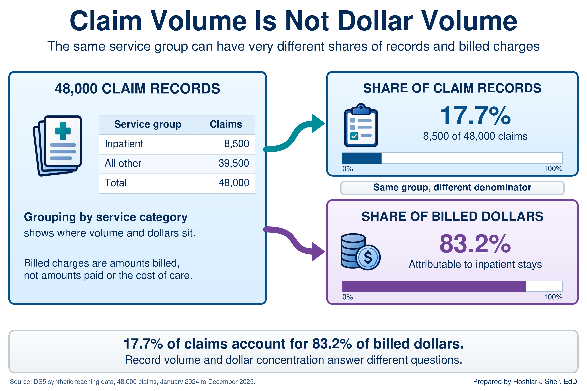
Determine whether the mean or the median better describes
door_to_provider_minutes, then examine whether the wait
differs by day of the week. Use ch09_ed_profile.xlsx.
- On the data sheet, select the values of
door_to_provider_minutes(columnAI). - Record the Average shown on the status bar.
- On the
Profilesheet, typeDoor-to-provider medianinF20and enter=MEDIAN(ED[door_to_provider_minutes])inG20. - Compare the two values and write one sentence selecting the mean or the median.
- Insert a PivotTable from the
EDTable on a new sheet. Placearrival_day_of_weekin Rows anddoor_to_provider_minutesin Values. - Change the summary to Average and format the values with one decimal place.
- Compare the seven days and write one sentence describing the size of any difference.
The answer key is at the end of the chapter.
The mean remains essential for skewed data when the question concerns totals, because a total equals the mean multiplied by the count.
The 17,416 ED visits in this file sum to 3,654,737 minutes, about 60,900 hours. A staffing plan based on the median of 190 minutes would understate that workload by about 5,800 hours. The same reasoning applies to billed revenue, so operational reports often present the median, the mean, and one or two percentiles together.
The following is an illustrative scenario, not a specific organization. A health system ties a bonus to reducing mean ED length of stay, as the manager in the opening scenario did. Staff soon recognize two problems with the target:
- The mean reflects a delay the ED does not control. The longest stays, patients boarding while they wait for inpatient beds, hold the mean well above the typical stay, and bed availability is managed elsewhere in the hospital.
- The mean overlooks routine improvements. Better routine patient flow moves the mean only slightly, so it receives little attention, and the median, which reflects the typical patient’s experience, barely changes.
Leadership then replaces the single target with two measures: the median length of stay, owned by the ED, and the 90th percentile, owned jointly with inpatient bed management. Each measure now corresponds to a problem that a specific team can act on.
- A complete summary reports the count, center, spread, and shape of a column, and often compares groups.
- Categorical fields are summarized with frequency tables and cross-tabulations; a rate is the average of a 0/1 flag, computed only over the rows its definition includes.
- The mean is sensitive to extreme values and the median is not; for skewed measures such as durations and costs, the median describes a typical case and the mean describes totals.
- Pair the median with the IQR or percentiles and the mean with the SD, and confirm the shape with a histogram whose bin width is meaningful in the data’s units.
- PivotTables provide counts, averages, and percentages but not
medians; use
MEDIAN(IF(...))orGROUPBYfor group medians, and report every result as a summary line with its count, period, and exclusions.
- In the appointment file,
=AVERAGE(Appointments[no_show_flag])returns 13.6 percent, whereas the Chapter 1 no-show rate is 16.1 percent. Explain the difference and write a formula that returns 16.1 percent. - Select a measure of center for each field and justify each choice in
one sentence:
disposition,staff_courtesy_score_1_4,door_to_provider_minutes, andbilled_charge_usd. - Five patients waited 20, 25, 30, 35, and 90 minutes. Calculate the mean, median, range, and sample standard deviation, following the steps for Table 4.
datasets/PH1_places_county_wide.csvholds one row for each of 3,143 counties and county equivalents, with synthetic PLACES-style estimates (see the About the teaching data box).- Calculate the count, mean, median, SD, Q1, and Q3 of
obesity_pct, and describe the shape of the distribution. - Using
adult_population_band, explain why the mean of the county percentages is not the percentage of all adults with obesity. - Identify two further limits on what county-level percentages can show.
- Calculate the count, mean, median, SD, Q1, and Q3 of
- A colleague requests the median ED length of stay for each
arrival_modefrom a PivotTable. Explain why Value Field Settings cannot provide it, and write a formula that can. - Using
datasets/DS3_ed_throughput_clean.csv, calculate the count, median, Q1, and Q3 oflength_of_stay_minutesfor visits with adispositionofAdmit, and write a summary line. - Using the Real World box, explain why the median and the 90th percentile together form a better target than the mean.
- A director asks, “How long do ED patients wait to see a provider?”
List three questions you would ask to define the measure, then write a
summary line for
door_to_provider_minutesthat states the count, a center, a spread, the period, and any exclusions, and justify your choice of center.
Try It.
- Mean or median. The mean (about 43.4 minutes) and median (43) agree, so the distribution is approximately symmetric, apart from the second peak from triage level 5. The mean with its SD of 17.2 minutes is appropriate.
- Day of week. Weekdays average 42.4 to 43.1 minutes, and Saturday (44.8) and Sunday (44.9) about two minutes longer. Each day has more than 2,300 visits, but a two-minute difference is small relative to an SD of 17 minutes: a modest association, not evidence of a cause.
Practice A.
- Row counts: 429, 1,542, 4,734, 6,751, and 4,544.
- Row percentages: admissions are 12.6 percent at level 1 and 11.1 percent at level 2, against 5.4 to 6.0 percent at levels 3 to 5, while discharges home rise from 67.4 to 78.4 percent.
- EMS slicer: level 1 admissions reach 19.2 percent, but the figure rests on 10 admissions among 52 visits, so it should be reported as “10 of 52 (19.2 percent).”
Practice B.
- Shape: a mean more than five times the median indicates strong right skew, which the histogram confirms.
- Groups: medians range from $175.66 (office visits) to $13,853.22 (inpatient stays), so combining different services contributes substantially to the skew.
- Inpatient share: inpatient stays are 17.7 percent of claims but about 83.2 percent of billed dollars.
- Summary line: “Median billed charge was $750 per claim (IQR $206 to $2,060) across all 48,000 claims with service dates from January 2024 to December 2025; no claims were excluded.”
Exercises.
no_show_flagis 0 for cancellations and reschedules as well as completed visits, so averaging it over every row divides 4,913 no-shows by 36,000 appointments. The Chapter 1 denominator is 30,571:=COUNTIFS(Appointments[attendance_outcome], "No Show") / (COUNTIFS(Appointments[attendance_outcome], "Completed") + COUNTIFS(Appointments[attendance_outcome], "No Show")).disposition: the mode with percentages, because it is nominal.staff_courtesy_score_1_4: the median or top-box percentage, because it is ordinal.door_to_provider_minutes: the mean, because it is approximately symmetric.billed_charge_usd: the median, because it is strongly right-skewed, with the mean added when totals matter.- Mean 40 minutes; median 30; range 70. The squared distances (400, 225, 100, 25, and 2,500) sum to 3,250; divided by 4, the variance is 812.5, and the standard deviation is about 28.5 minutes.
- To one decimal: n = 3,143; mean 31.3 percent; median 31.3; SD 6.3;
Q1 26.9; Q3 35.6.
- Shape: approximately symmetric (
SKEWabout 0.08). - Why the mean is not the adult percentage: the mean of county percentages weights every county equally, so in this file the 1,004 counties in the smallest population band count as much as the 492 in the largest. Smaller counties have a slightly higher median (31.9 against 30.5). The banded results therefore suggest that population weighting could produce a lower value, but the direction and size cannot be calculated from population bands alone.
- Further limits: the values are synthetic teaching estimates and cannot estimate actual U.S. obesity prevalence; a county percentage does not establish any individual resident’s risk; and a geographic association, such as a higher percentage in one region, does not establish its cause.
- Shape: approximately symmetric (
- Summarize Values By has no median option. Use
=MEDIAN(IF(ED[arrival_mode]=A2, IF(ED[length_of_stay_minutes]<>"", ED[length_of_stay_minutes]))), orGROUPBYwithMEDIAN. The medians are 187 minutes (EMS), 189 (Other), 182 (Police), 203 (Transfer), and 191 (Walk-in). - n = 1,127; median 327 minutes; Q1 285; Q3 583.5. Summary line: “Median ED length of stay for admitted patients was 327 minutes (IQR 285 to 584) across 1,127 visits, January 2024 to December 2025.” The mean, about 436 minutes, indicates that this group is also right-skewed.
- The mean combined two problems in one number and was held above the typical stay by boarding, which ED staff could not control. The median measures routine flow, which the ED can improve, and the 90th percentile isolates the long stays, so each measure has a responsible team.
- Sample answer:
- Questions to ask: Does “wait” mean arrival to provider, or arrival to triage? All visits, or particular triage levels? Which period?
- Summary line: the mean (43.4 minutes) and median (43) agree, so the mean with its SD is appropriate: “Mean door-to-provider time was 43.4 minutes (SD 17.2) across 17,416 visits, January 2024 to December 2025; the 584 visits that left without being seen have no provider time and are excluded.”
- Follow-up: because the wait rises from a mean of 13 minutes at triage level 1 to 66 at level 5, a useful follow-up reports the summary by triage level.
- Centers for Disease Control and Prevention. (2024). PLACES: Local data for better health. https://www.cdc.gov/places/
- Centers for Medicare & Medicaid Services. (n.d.). Summary of HCAHPS survey results. HCAHPS Online. https://hcahpsonline.org/en/summary-analyses/
- Çetinkaya-Rundel, M., & Hardin, J. (2021). Introduction to modern statistics. OpenIntro. https://www.openintro.org/book/ims/
- Diez, D. M., Çetinkaya-Rundel, M., & Barr, C. D. (2019). OpenIntro statistics (4th ed.). OpenIntro. https://www.openintro.org/book/os/
- Freedman, D., Pisani, R., & Purves, R. (2007). Statistics (4th ed.). W. W. Norton.
- Spiegelhalter, D. (2019). The art of statistics: How to learn from data. Basic Books.
- Tukey, J. W. (1977). Exploratory data analysis. Addison-Wesley.
- Descriptive statistics
- Numbers that summarize the count, center, spread, and shape of a column.
- Sample size (n)
- The number of records from which a statistic is computed.
- Frequency table
- A table that lists each category of a field with the number of records in that category.
- Relative frequency
- A category’s count divided by the total, usually expressed as a percentage.
- Mode
- The most frequent category or value in a column.
- Flag
- A column coded 1 when an event occurred and 0 when it did not, so that its average is a rate.
- Mean
- The sum of the values divided by their count.
- Median
- The middle value of sorted data, with half the records at or below it and half at or above it.
- Top-box score
- The percentage of survey responses in the most favorable category of a rating scale.
- Range
- The largest value minus the smallest value.
- Percentile
- The value at or below which a given percentage of the data falls.
- Variance
- The average squared distance of values from the mean, computed with n minus 1 for a sample.
- Standard deviation
- The square root of the variance, expressing the typical distance of values from the mean in the units of the data.
- Five-number summary
- The minimum, first quartile, median, third quartile, and maximum of a column.
- Distribution
- The pattern of how often each value of a column occurs.
- Histogram
- A chart that counts the values falling in each of a series of equal-width bins.
- Bin
- One of the equal-width ranges into which a histogram divides a numeric column.
- Symmetric
- Describes a distribution whose two sides approximately mirror each other.
- Skew
- Asymmetry in a distribution in which one tail extends farther than the other.
- Slicer
- A set of buttons that filters a PivotTable by category.
- Cross-tabulation
- A table, also called a contingency table, that counts records by two categorical fields at once, one in the rows and one in the columns.
- Summary line
- A single sentence that reports a measure’s center, spread, count, period, and exclusions.
Cite this chapter
@incollection{sher2026ch09,
author = {Sher, Hoshiar J.},
title = {Summarizing Data: Descriptive Statistics and Grouping},
booktitle = {Introduction to Healthcare Data Analytics Using Excel},
year = {2026},
doi = {10.5281/zenodo.23327956},
url = {https://yar177.github.io/intro-to-HDA-site/ch09.html}
}